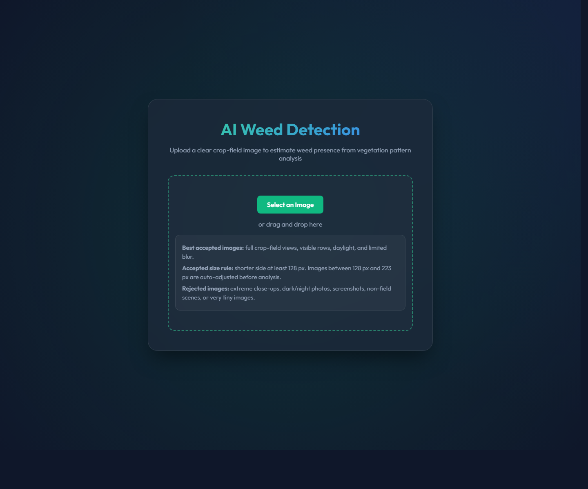
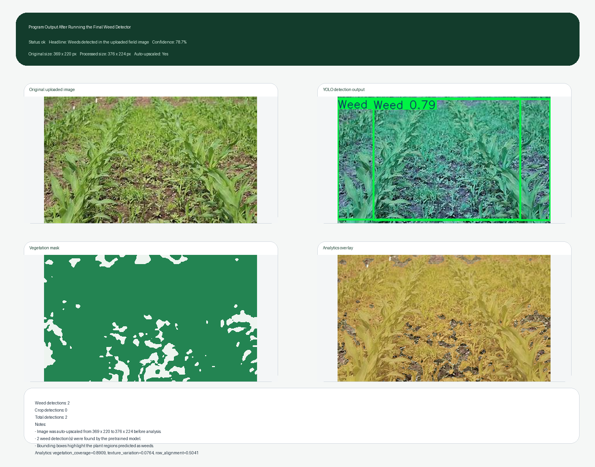
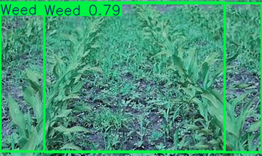
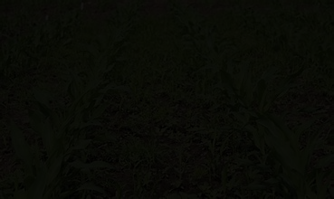

Image-Based Weed Detection in Crop Fields Using Pretrained YOLO and Dual User Interfaces
A Word-Format Final Submission Report for Academic Evaluation
Replace the bracketed fields before final submission.
Certificate
This is to certify that the project entitled "Image-Based Weed Detection in Crop Fields Using Pretrained YOLO and Dual User Interfaces" is a bonafide work carried out by [Your Name] during the academic year 2025-2026 in partial fulfillment of the academic requirements under our guidance.
Guide Signature: ____________________
Head of Department: ____________________
Declaration
I hereby declare that this project report is my original work and has not been submitted elsewhere for any other academic award. All references and supporting sources used in this work have been properly acknowledged.
Student Signature: ____________________
Acknowledgement
I express my sincere gratitude to my guide, faculty members, and institution for their support, encouragement, and technical guidance during the completion of this project. I also thank my friends and family for their constant motivation. The published research papers, open-source datasets, and public pretrained model sources referenced in this work were especially useful in improving the project from a basic feature-based prototype into a more practical image-based weed-detection system.
Abstract
Weed infestation reduces agricultural productivity because weeds compete with crops for water, nutrients, sunlight, and space. Manual inspection is time-consuming, while blanket herbicide spraying is inefficient and environmentally harmful. This project presents a final image-based weed detection system that uses a pretrained YOLO model as the primary detector and offers both a Streamlit application and a lightweight browser demo for user interaction. The system accepts crop-field RGB images, validates them for practical quality issues, and now uses a relaxed upload policy: very tiny images are rejected, while smaller usable images are auto-upscaled to the detector's preferred minimum size before inference. The application also computes supporting vegetation analytics such as Excess Green segmentation, vegetation coverage, texture variation, component density, and row alignment. During local verification, the larger accepted test image produced 2 weed detections with a top confidence of 81.5%, while the smaller accepted image was auto-upscaled from 369 x 220 to 376 x 224 pixels and still returned 2 weed detections. The final report includes the full source code, real program output, analytical figures, UI views, and the corrected workflow used for submission.
Table of Contents
- Certificate
- Declaration
- Acknowledgement
- Abstract
- Chapter 1: Introduction
- Chapter 2: Literature Survey
- Chapter 3: Existing System and Proposed System
- Chapter 4: System Design and Requirements
- Chapter 5: Methodology
- Chapter 6: User Interface and Implementation
- Chapter 7: Execution, Output, and Analysis
- Chapter 8: Complete Program Code
- Chapter 9: Applications
- Chapter 10: Conclusion and Future Scope
- References
List of Figures
- Workflow of the final weed detection system
- System architecture
- Browser demo interface
- Primary Streamlit interface
- Program output after running the detector
- Primary YOLO detection example
- Secondary Random Forest analytics metrics
- Secondary Random Forest confusion matrix
- Secondary Random Forest feature importance
Chapter 1: Introduction
Weeds are unwanted plants that reduce agricultural productivity by competing with cultivated crops for essential resources. Traditional weed monitoring depends heavily on manual field inspection or broad chemical spraying. In precision agriculture, there is a strong need for image-based decision systems that can identify weed presence from field images and support more targeted intervention.
This project began as a simpler feature-based prototype but was redesigned into a more practical image-driven pipeline. The final implementation now allows users to upload crop-field images, checks whether those images are suitable for analysis, runs a pretrained YOLO weed detector, and displays the result alongside supporting vegetation analytics. The submission also includes a lightweight browser demo interface that mirrors the upload policy and user-facing behavior for presentation purposes.
Problem Statement: Build a user-friendly system that accepts crop-field images, validates image quality, detects weeds using a pretrained object-detection model, and displays the result with visual evidence and analytical explanation.
Objectives:
- Provide a primary working weed detector with a simple upload-based user interface.
- Support smaller usable images through automatic upscaling instead of over-restrictive rejection.
- Display explainable analytics such as vegetation masks and feature summaries.
- Verify the program on accepted and rejected scenarios and include the real outputs in the final report.
- Package the final submission in Word format with full program code.
Chapter 2: Literature Survey
| Reference | Main Contribution | How It Influenced This Project |
|---|---|---|
| DeepWeeds (Scientific Reports, 2019) | Benchmark field-image weed dataset and image-based baseline | Motivated the shift from synthetic tabular-only logic to field-image detection |
| Machine learning for weed-plant discrimination in agriculture 5.0 (2023) | Comprehensive review of weed discrimination methods in agriculture | Supported the methodology, validation discussion, and literature framing |
| Weed Detection Using Deep Learning: A Systematic Literature Review (Sensors, 2023) | Summarizes modern deep learning strategies for weed detection | Supported the choice of an object-detection based final system |
| IRJET-V11I5168 and IJCRT2203197 | Student-provided supporting engineering/review references | Used as secondary background references for report strengthening |
The literature consistently shows that real field-image analysis and deep learning based detectors are more suitable for practical weed recognition than purely synthetic tabular experiments. This directly shaped the final redesign of the project.
Chapter 3: Existing System and Proposed System
| Aspect | Earlier / Existing Approach | Final Proposed System |
|---|---|---|
| Input | Feature-only or manual observation | RGB crop-field image upload |
| Primary model | Random Forest prototype | Pretrained YOLO weed detector |
| User interface | Limited or absent | Streamlit app + lightweight browser demo |
| Image handling | Strict rejection of small images | Reject only tiny unusable images, auto-upscale smaller usable images |
| Output | Label only | Bounding boxes, notes, analytics, confidence, and report-ready visuals |
Chapter 4: System Design and Requirements
| Type | Requirement |
|---|---|
| Hardware | Laptop or desktop, standard RGB crop-field image source |
| Software | Python 3.13, Streamlit, Pillow, NumPy, Pandas, Requests, Torch, Torchvision, Ultralytics, scikit-learn, Joblib |
| Primary UI | Streamlit web application |
| Secondary UI | Static browser demo page using HTML, CSS, and JavaScript |
| Model file | models/weedblaster-vision-yolov8s.pt |


Chapter 5: Methodology
5.1 Input Validation
The final system accepts images in PNG, JPG, JPEG, and WEBP formats. Images whose shorter side is below 128 pixels are rejected as too small for meaningful analysis. Images whose shorter side falls between 128 pixels and 223 pixels are accepted and auto-upscaled to the detector's preferred minimum size of 224 pixels. Brightness, exposure, vegetation visibility, blur, and scene quality are also checked before inference.
5.2 Pretrained Detection
The primary deployed detector is a pretrained YOLO model loaded through the ultralytics package. The
model is downloaded once, stored locally, and used for CPU-based inference on uploaded images. If the detector
produces weed-class bounding boxes, the application reports weed presence and shows the annotated image.
5.3 Supporting Analytics
In parallel, the application computes RGB vegetation analytics using Excess Green segmentation. The analytics module produces vegetation coverage, Excess Green statistics, texture variation, component density, and row alignment. These features are shown to the user for explanation and are also used by the older Random Forest fallback bundle if the YOLO detector becomes unavailable.
5.4 Dual Interface Design
The Streamlit application is the primary working system for final detection. A secondary browser demo interface is maintained to present the upload flow and browser-side validation behavior. Both interfaces now follow the same image acceptance rules to reduce confusion during demonstration.
Chapter 6: User Interface and Implementation
6.1 Libraries Used
streamlit>=1.32pillow>=10.0numpy>=1.24pandas>=2.0scikit-learn>=1.4joblib>=1.3requests>=2.31torch>=2.1torchvision>=0.16ultralytics>=8.4
6.2 Final Interfaces


The browser demo is included to show a lightweight presentation layer, while the Streamlit interface is the primary working implementation that runs the pretrained YOLO detector and the supporting analytics. The final report treats the Streamlit app as the main submission UI.
6.3 Model and Runtime Configuration
| Item | Details |
|---|---|
| Primary deployed model | Pretrained YOLO weed detector |
| Weights file | models/weedblaster-vision-yolov8s.pt |
| Inference backend | CPU via Torch and Ultralytics |
| Default confidence threshold | 0.25 |
| Preferred minimum input size | 224 px on the shorter side |
| Absolute rejection threshold | 128 px on the shorter side |
| Secondary fallback | Random Forest analytics bundle |
How the final interface works:
- The user opens the Streamlit app or browser demo and uploads a crop-field image.
- The system validates file type, image size, exposure, and field suitability.
- Accepted smaller images are auto-upscaled if needed before inference.
- The YOLO model predicts weed boxes and returns the final weed/no-weed decision.
- The UI shows the original image, annotated output, vegetation mask, overlay, summary counts, and notes.
Chapter 7: Execution, Output, and Analysis
The final detector was executed on three verification scenarios: a larger accepted field image, a smaller usable field image that triggered auto-upscaling, and a deliberately dark invalid image. The larger accepted run produced 2 weed detections with a top confidence of 81.5%. The smaller accepted run was automatically upscaled from 369 x 220 to 376 x 224 pixels and still returned 2 weed detections. The dark validation image was rejected as unsuitable, demonstrating that the relaxed policy no longer blocks modestly small images but still protects the detector from poor-quality inputs.


7.1 Verification Scenario: Larger Accepted Image
| Status | ok |
| Headline | Weeds detected in the uploaded field image |
| Original size | 738 x 440 px |
| Processed size | 738 x 440 px |
| Auto-upscaled | No |
| Weed detections | 2 |
| Crop detections | 0 |
| Top confidence | 81.5% |
- 2 weed detection(s) were found by the pretrained model.
- Bounding boxes highlight the plant regions predicted as weeds.
| Class | Confidence | x1 | y1 | x2 | y2 |
|---|---|---|---|---|---|
| Weed | 0.815 | 125 | 8 | 736 | 429 |
| Weed | 0.569 | 0 | 7 | 632 | 426 |
7.2 Verification Scenario: Smaller Accepted and Auto-Upscaled Image
| Status | ok |
| Headline | Weeds detected in the uploaded field image |
| Original size | 369 x 220 px |
| Processed size | 376 x 224 px |
| Auto-upscaled | Yes |
| Weed detections | 2 |
| Crop detections | 0 |
| Top confidence | 78.7% |
- Image was auto-upscaled from 369 x 220 to 376 x 224 before analysis.
- 2 weed detection(s) were found by the pretrained model.
- Bounding boxes highlight the plant regions predicted as weeds.
| Class | Confidence | x1 | y1 | x2 | y2 |
|---|---|---|---|---|---|
| Weed | 0.787 | 63 | 4 | 375 | 218 |
| Weed | 0.551 | 0 | 3 | 322 | 217 |
7.3 Verification Scenario: Invalid Dark Image
| Status | invalid |
| Headline | Image not accepted for reliable analysis |
| Original size | 369 x 220 px |
| Processed size | 376 x 224 px |
| Auto-upscaled | Yes |
| Weed detections | 0 |
| Crop detections | 0 |
| Top confidence | 0.0% |
- Image was auto-upscaled from 369 x 220 to 376 x 224 before analysis.
- The image is too dark. Use a brighter daylight field image.
- The image appears too blurred or flat. Use a clearer field photo.

7.4 Supporting Analytical Figures


Chapter 8: Complete Program Code
The code is organized below in two separate parts so the implementation is easier to review in the final submission: the Python application code used for detection and analytics, and the separate web interface code used for the lightweight browser demo.
8.1 Python Implementation Code
app.py
"""Streamlit UI for pretrained weed detection plus analytics."""
from __future__ import annotations
from pathlib import Path
import pandas as pd
import streamlit as st
from PIL import Image
from image_model import (
analyze_image,
create_mask_preview,
create_overlay_image,
extract_image_features,
load_or_train_classifier,
)
from yolo_weed_detector import detect_weeds_with_pretrained_model, get_pretrained_model_status
st.set_page_config(page_title="Crop Field Weed Detector", layout="wide")
ARTICLE_LINKS = [
("DeepWeeds dataset and field-image baseline", "https://www.nature.com/articles/s41598-018-38343-3"),
("CropAndWeed dataset (WACV 2023)", "https://github.com/cropandweed/cropandweed-dataset"),
("CWFID crop/weed field image dataset", "https://github.com/cwfid/dataset"),
("Systematic review of weed detection with deep learning", "https://www.mdpi.com/1424-8220/23/7/3670"),
]
def apply_theme() -> None:
st.markdown(
"""
<style>
.stApp {
background:
radial-gradient(circle at top left, rgba(204, 236, 219, 0.55), transparent 28%),
radial-gradient(circle at bottom right, rgba(244, 227, 199, 0.45), transparent 32%),
#f7f5ef;
}
.hero {
background: linear-gradient(135deg, #153d2f, #2f6b53 62%, #d8b26a 140%);
color: #f9fbfa;
border-radius: 24px;
padding: 30px 34px;
margin-bottom: 20px;
box-shadow: 0 20px 60px rgba(21, 61, 47, 0.18);
}
.hero h1 {
font-size: 2.2rem;
margin-bottom: 0.35rem;
}
.hero p {
font-size: 1.02rem;
max-width: 940px;
margin: 0;
line-height: 1.65;
}
.status-card {
border-radius: 18px;
padding: 20px 22px;
margin-bottom: 14px;
border: 1px solid rgba(0,0,0,0.06);
box-shadow: 0 10px 30px rgba(31, 41, 51, 0.08);
}
.status-positive {
background: linear-gradient(135deg, rgba(255, 244, 229, 0.96), rgba(255, 232, 205, 0.96));
}
.status-negative {
background: linear-gradient(135deg, rgba(234, 246, 239, 0.96), rgba(220, 241, 229, 0.96));
}
.status-warning {
background: linear-gradient(135deg, rgba(255, 248, 229, 0.96), rgba(255, 239, 204, 0.96));
}
.status-error {
background: linear-gradient(135deg, rgba(254, 226, 226, 0.96), rgba(254, 242, 242, 0.96));
}
.status-card h2 {
margin: 0 0 6px;
font-size: 1.55rem;
}
.status-card p {
margin: 0.25rem 0;
color: #364152;
}
.source-list a {
color: #1b6b49;
text-decoration: none;
}
.source-list a:hover {
text-decoration: underline;
}
</style>
""",
unsafe_allow_html=True,
)
def render_sidebar() -> None:
status = get_pretrained_model_status()
st.sidebar.header("Detection Setup")
st.sidebar.write(
"This app uses a pretrained YOLO weed detector first and then shows vegetation-pattern analytics for explanation."
)
with st.sidebar.expander("Pretrained model", expanded=True):
st.write(f"Local weights available: `{'Yes' if status['local_exists'] else 'No - first run downloads them'}`")
st.caption(f"Model path: `{Path(status['model_path']).name}`")
st.markdown(f"[Model source]({status['model_source']})")
with st.sidebar.expander("Accepted image restrictions", expanded=True):
st.write("- Clear crop-field images only")
st.write("- PNG, JPG, JPEG, or WEBP")
st.write("- Daylight images work best")
st.write(
f"- Shorter side must be at least {status['absolute_min_dimension']} px"
)
st.write(
f"- Images between {status['absolute_min_dimension']} px and "
f"{status['preferred_min_dimension'] - 1} px are auto-upscaled before inference"
)
st.write("- Avoid extreme close-ups, dark images, screenshots, and heavy blur")
with st.sidebar.expander("Research links", expanded=False):
st.markdown('<div class="source-list">', unsafe_allow_html=True)
for label, url in ARTICLE_LINKS:
st.markdown(f"- [{label}]({url})")
st.markdown("</div>", unsafe_allow_html=True)
def render_status_card(title: str, confidence: float, description: str, card_class: str) -> None:
st.markdown(
f"""
<div class="status-card {card_class}">
<h2>{title}</h2>
<p><strong>Confidence:</strong> {confidence * 100:.1f}%</p>
<p>{description}</p>
</div>
""",
unsafe_allow_html=True,
)
def render_detection_notes(notes: list[str]) -> None:
if not notes:
return
st.subheader("Detection notes")
for note in notes:
st.write(f"- {note}")
def render_analytics_panel(feature_values: dict[str, float], feature_table: pd.DataFrame) -> None:
st.subheader("Vegetation analytics")
metric_col_1, metric_col_2, metric_col_3 = st.columns(3)
with metric_col_1:
st.metric("Vegetation coverage", f"{feature_values['vegetation_coverage']:.3f}")
st.metric("Excess green mean", f"{feature_values['excess_green_mean']:.3f}")
with metric_col_2:
st.metric("Texture variation", f"{feature_values['texture_variation']:.3f}")
st.metric("Component density", f"{feature_values['component_density']:.3f}")
with metric_col_3:
st.metric("Row alignment", f"{feature_values['row_alignment']:.3f}")
st.metric("Excess green std", f"{feature_values['excess_green_std']:.3f}")
st.dataframe(feature_table, use_container_width=True, hide_index=True)
def main() -> None:
apply_theme()
render_sidebar()
st.markdown(
"""
<div class="hero">
<h1>Crop Field Weed Detector</h1>
<p>
Upload a clear crop-field image and the app will run a pretrained weed detector with bounding boxes.
Alongside the final weed / no-weed result, the interface also shows vegetation-mask analytics so you can
explain the decision in your project demo and report.
</p>
</div>
""",
unsafe_allow_html=True,
)
uploaded_file = st.file_uploader(
"Upload a crop-field image",
type=["png", "jpg", "jpeg", "webp"],
help="Use a daylight field image with visible crop rows or plantation structure. Smaller usable images are auto-upscaled.",
)
if not uploaded_file:
st.info(
"No image uploaded yet. The first real run will download the pretrained detector weights and then analyze the image."
)
st.markdown(
"""
**What this app shows**
- Original image
- YOLO detection view with bounding boxes
- Vegetation mask
- Overlay analytics view
- Weed / no-weed decision
- Detection table and image-feature summary
- Auto-upscale note for smaller accepted images
"""
)
return
image = Image.open(uploaded_file).convert("RGB")
feature_values, vegetation_mask, resized_image = extract_image_features(image)
vegetation_mask_image = create_mask_preview(vegetation_mask)
overlay_image = create_overlay_image(resized_image, vegetation_mask)
feature_table = pd.DataFrame(
{
"Feature": [name.replace("_", " ").title() for name in feature_values.keys()],
"Value": list(feature_values.values()),
}
)
with st.spinner("Running pretrained weed detector..."):
detection_result = detect_weeds_with_pretrained_model(image)
fallback_result = None
if detection_result.status == "error":
fallback_bundle = load_or_train_classifier()
fallback_result = analyze_image(image, model_bundle=fallback_bundle)
if detection_result.status == "invalid":
render_status_card(
detection_result.headline,
0.0,
"The uploaded file does not meet the current crop-field image acceptance rules.",
"status-error",
)
render_detection_notes(detection_result.notes)
elif detection_result.status == "error":
render_status_card(
"Pretrained detector not available",
fallback_result.confidence if fallback_result else 0.0,
"The app switched to the older vegetation-pattern fallback so you can still continue the demo.",
"status-warning",
)
render_detection_notes(detection_result.notes)
if fallback_result is not None:
st.subheader("Fallback result")
st.write(f"- {fallback_result.label_text}")
for reason in fallback_result.reasoning:
st.write(f"- {reason}")
else:
if detection_result.weed_present is True:
render_status_card(
detection_result.headline,
detection_result.confidence,
"At least one weed-class bounding box was found by the pretrained detector.",
"status-positive",
)
elif detection_result.weed_present is False:
render_status_card(
detection_result.headline,
detection_result.confidence,
"Crop detections were found and no weed boxes crossed the confidence threshold.",
"status-negative",
)
else:
render_status_card(
detection_result.headline,
detection_result.confidence,
"No reliable crop or weed boxes were found, so the image should be retaken for a stronger result.",
"status-warning",
)
render_detection_notes(detection_result.notes)
if detection_result.auto_upscaled:
st.info(
"This image was auto-upscaled before inference so the shorter side met the model's preferred minimum size. "
f"Original size: {detection_result.original_size[0]} x {detection_result.original_size[1]} px. "
f"Processed size: {detection_result.processed_size[0]} x {detection_result.processed_size[1]} px."
)
image_col_1, image_col_2 = st.columns(2)
with image_col_1:
st.subheader("Original image")
st.image(resized_image, use_container_width=True)
with image_col_2:
st.subheader("YOLO detection view")
if detection_result.annotated_image is not None:
st.image(detection_result.annotated_image, use_container_width=True)
elif fallback_result is not None:
st.image(fallback_result.resized_image, use_container_width=True)
else:
st.info("No detection overlay available for this image.")
image_col_3, image_col_4 = st.columns(2)
with image_col_3:
st.subheader("Vegetation mask")
st.image(vegetation_mask_image, use_container_width=True)
with image_col_4:
st.subheader("Analytics overlay")
st.image(overlay_image, use_container_width=True)
st.subheader("Detection summary")
summary_col_1, summary_col_2, summary_col_3, summary_col_4 = st.columns(4)
with summary_col_1:
st.metric("Weed detections", detection_result.weed_count)
with summary_col_2:
st.metric("Crop detections", detection_result.crop_count)
with summary_col_3:
st.metric(
"Processed size",
f"{detection_result.processed_size[0]} x {detection_result.processed_size[1]}",
)
with summary_col_4:
st.metric("Top confidence", f"{detection_result.confidence * 100:.1f}%")
info_col_1, info_col_2 = st.columns(2)
with info_col_1:
st.caption(
f"Original upload size: {detection_result.original_size[0]} x {detection_result.original_size[1]} px"
)
with info_col_2:
st.caption(
"Auto-upscaled before inference" if detection_result.auto_upscaled else "Original size was already acceptable"
)
st.subheader("Detection table")
if detection_result.detections_table.empty:
st.info("No confident bounding boxes were produced for this image.")
else:
st.dataframe(detection_result.detections_table, use_container_width=True, hide_index=True)
render_analytics_panel(feature_values, feature_table)
with st.expander("How to run the project", expanded=False):
st.write("1. Install dependencies with `pip install -r requirements.txt`.")
st.write("2. Launch the interface with `streamlit run app.py`.")
st.write("3. On the first detection run, the app downloads the pretrained model weights automatically.")
st.write("4. Upload a crop-field image and review the detections plus analytics.")
with st.expander("Open the detailed literature notes", expanded=False):
literature_path = Path("LITERATURE_REVIEW.md")
if literature_path.exists():
st.markdown(literature_path.read_text(encoding="utf-8"))
else:
st.write("Literature notes file not found.")
if __name__ == "__main__":
main()
yolo_weed_detector.py
"""Pretrained weed detection using a remote YOLO model."""
from __future__ import annotations
from dataclasses import dataclass
from functools import lru_cache
from pathlib import Path
from typing import Any
import os
import numpy as np
import pandas as pd
import requests
from PIL import Image
from image_model import compute_excess_green
MODELS_DIR = Path("models")
DEFAULT_MODEL_URL = os.getenv(
"WEED_MODEL_URL",
"https://huggingface.co/NvMayMay/weedblaster-vision-yolov8s/resolve/main/best.pt",
)
DEFAULT_MODEL_PATH = Path(os.getenv("WEED_MODEL_PATH", MODELS_DIR / "weedblaster-vision-yolov8s.pt"))
DEFAULT_CONFIDENCE = float(os.getenv("WEED_MODEL_CONFIDENCE", "0.25"))
DEFAULT_IMAGE_SIZE = int(os.getenv("WEED_MODEL_IMAGE_SIZE", "960"))
ABSOLUTE_MIN_DIMENSION = int(os.getenv("WEED_MODEL_ABSOLUTE_MIN_DIMENSION", "128"))
PREFERRED_MIN_DIMENSION = int(os.getenv("WEED_MODEL_PREFERRED_MIN_DIMENSION", "224"))
@dataclass
class FieldImageValidation:
is_valid: bool
issues: list[str]
notes: list[str]
prepared_image: Image.Image
original_size: tuple[int, int]
processed_size: tuple[int, int]
auto_upscaled: bool
@dataclass
class PretrainedDetectionResult:
status: str
weed_present: bool | None
headline: str
confidence: float
weed_count: int
crop_count: int
total_detections: int
annotated_image: Image.Image | None
detections_table: pd.DataFrame
notes: list[str]
model_path: str
model_source: str
original_size: tuple[int, int]
processed_size: tuple[int, int]
auto_upscaled: bool
def get_pretrained_model_status() -> dict[str, Any]:
model_path = DEFAULT_MODEL_PATH
return {
"model_path": str(model_path.resolve()),
"local_exists": model_path.exists(),
"model_source": DEFAULT_MODEL_URL,
"absolute_min_dimension": ABSOLUTE_MIN_DIMENSION,
"preferred_min_dimension": PREFERRED_MIN_DIMENSION,
}
def _configure_yolo_environment() -> None:
os.environ.setdefault("YOLO_CONFIG_DIR", str(Path.cwd()))
def _prepare_image_rgb(
image: Image.Image,
max_side: int = 1280,
min_side: int | None = None,
) -> Image.Image:
image = image.convert("RGB")
width, height = image.size
scale = 1.0
if min_side is not None and min(width, height) < min_side:
scale = max(scale, min_side / min(width, height))
if max(width, height) * scale > max_side:
scale = max_side / max(width, height)
if abs(scale - 1.0) < 1e-6:
return image
return image.resize(
(max(1, round(width * scale)), max(1, round(height * scale))),
Image.Resampling.LANCZOS,
)
def validate_field_image(image: Image.Image) -> FieldImageValidation:
original = image.convert("RGB")
original_size = original.size
original_width, original_height = original_size
auto_upscaled = False
notes: list[str] = []
issues: list[str] = []
if min(original_width, original_height) < ABSOLUTE_MIN_DIMENSION:
issues.append(
f"Image resolution is too low. Use a field image whose shorter side is at least {ABSOLUTE_MIN_DIMENSION} pixels."
)
prepared = _prepare_image_rgb(original, max_side=640)
return FieldImageValidation(
is_valid=False,
issues=issues,
notes=notes,
prepared_image=prepared,
original_size=original_size,
processed_size=prepared.size,
auto_upscaled=False,
)
prepared = _prepare_image_rgb(original, max_side=640, min_side=PREFERRED_MIN_DIMENSION)
width, height = prepared.size
aspect_ratio = width / max(height, 1)
auto_upscaled = prepared.size != original_size and min(original_width, original_height) < PREFERRED_MIN_DIMENSION
if auto_upscaled:
notes.append(
"Image was auto-upscaled from "
f"{original_width} x {original_height} to {prepared.size[0]} x {prepared.size[1]} before analysis."
)
if aspect_ratio < 0.45 or aspect_ratio > 2.8:
issues.append("Image shape is unusual. Use a standard portrait or landscape crop-field image.")
rgb = np.asarray(prepared).astype(np.float32) / 255.0
brightness = float(rgb.mean())
if brightness < 0.16:
issues.append("The image is too dark. Use a brighter daylight field image.")
if brightness > 0.94:
issues.append("The image is overexposed. Use a photo with more balanced lighting.")
exg = compute_excess_green(rgb)
vegetation_ratio = float((exg > 0.08).mean())
if vegetation_ratio < 0.03:
issues.append("Very little vegetation is visible. Upload a crop-field image that clearly shows plants.")
if vegetation_ratio > 0.97:
issues.append("The image is too close to the leaves. Upload a wider field view that shows crop rows.")
grayscale = (0.299 * rgb[:, :, 0]) + (0.587 * rgb[:, :, 1]) + (0.114 * rgb[:, :, 2])
if grayscale.shape[0] > 1 and grayscale.shape[1] > 1:
texture = float(
(
np.abs(np.diff(grayscale, axis=0)).mean()
+ np.abs(np.diff(grayscale, axis=1)).mean()
)
/ 2.0
)
if texture < 0.02:
issues.append("The image appears too blurred or flat. Use a clearer field photo.")
return FieldImageValidation(
is_valid=not issues,
issues=issues,
notes=notes,
prepared_image=prepared,
original_size=original_size,
processed_size=prepared.size,
auto_upscaled=auto_upscaled,
)
def ensure_pretrained_model() -> Path:
model_path = DEFAULT_MODEL_PATH
if model_path.exists():
return model_path
MODELS_DIR.mkdir(parents=True, exist_ok=True)
temp_path = model_path.with_suffix(model_path.suffix + ".part")
with requests.get(DEFAULT_MODEL_URL, stream=True, timeout=(30, 600)) as response:
response.raise_for_status()
with temp_path.open("wb") as file_handle:
for chunk in response.iter_content(chunk_size=1024 * 1024):
if chunk:
file_handle.write(chunk)
temp_path.replace(model_path)
return model_path
@lru_cache(maxsize=1)
def load_pretrained_model():
_configure_yolo_environment()
from ultralytics import YOLO
model_path = ensure_pretrained_model()
return YOLO(str(model_path))
def _boxes_to_table(result) -> pd.DataFrame:
records: list[dict[str, Any]] = []
boxes = result.boxes
names = result.names
if boxes is None:
return pd.DataFrame(columns=["Class", "Confidence", "x1", "y1", "x2", "y2"])
xyxy_values = boxes.xyxy.cpu().numpy() if hasattr(boxes, "xyxy") else []
confidence_values = boxes.conf.cpu().numpy() if hasattr(boxes, "conf") else []
class_values = boxes.cls.cpu().numpy().astype(int) if hasattr(boxes, "cls") else []
for box, confidence, class_id in zip(xyxy_values, confidence_values, class_values):
label = str(names.get(int(class_id), class_id))
records.append(
{
"Class": label,
"Confidence": round(float(confidence), 3),
"x1": int(box[0]),
"y1": int(box[1]),
"x2": int(box[2]),
"y2": int(box[3]),
}
)
return pd.DataFrame(records)
def _summarize_detections(detections_table: pd.DataFrame) -> tuple[int, int]:
if detections_table.empty:
return 0, 0
weed_mask = detections_table["Class"].str.lower().str.contains("weed", na=False)
weed_count = int(weed_mask.sum())
crop_count = int((~weed_mask).sum())
return weed_count, crop_count
def detect_weeds_with_pretrained_model(
image: Image.Image,
confidence_threshold: float = DEFAULT_CONFIDENCE,
image_size: int = DEFAULT_IMAGE_SIZE,
) -> PretrainedDetectionResult:
validation = validate_field_image(image)
if not validation.is_valid:
return PretrainedDetectionResult(
status="invalid",
weed_present=None,
headline="Image not accepted for reliable analysis",
confidence=0.0,
weed_count=0,
crop_count=0,
total_detections=0,
annotated_image=None,
detections_table=pd.DataFrame(columns=["Class", "Confidence", "x1", "y1", "x2", "y2"]),
notes=[*validation.notes, *validation.issues],
model_path=str(DEFAULT_MODEL_PATH.resolve()),
model_source=DEFAULT_MODEL_URL,
original_size=validation.original_size,
processed_size=validation.processed_size,
auto_upscaled=validation.auto_upscaled,
)
try:
model = load_pretrained_model()
prepared_image = _prepare_image_rgb(image, max_side=max(image_size, 640), min_side=PREFERRED_MIN_DIMENSION)
result = model.predict(
source=np.asarray(prepared_image),
conf=confidence_threshold,
imgsz=image_size,
device="cpu",
verbose=False,
)[0]
except Exception as exc:
return PretrainedDetectionResult(
status="error",
weed_present=None,
headline="Pretrained detector unavailable",
confidence=0.0,
weed_count=0,
crop_count=0,
total_detections=0,
annotated_image=None,
detections_table=pd.DataFrame(columns=["Class", "Confidence", "x1", "y1", "x2", "y2"]),
notes=[f"YOLO model could not run: {exc}"],
model_path=str(DEFAULT_MODEL_PATH.resolve()),
model_source=DEFAULT_MODEL_URL,
original_size=validation.original_size,
processed_size=prepared_image.size,
auto_upscaled=validation.auto_upscaled,
)
detections_table = _boxes_to_table(result)
weed_count, crop_count = _summarize_detections(detections_table)
total_detections = len(detections_table)
plotted = result.plot()
annotated_image = Image.fromarray(plotted[:, :, ::-1]) if plotted is not None else None
if weed_count > 0:
headline = "Weeds detected in the uploaded field image"
top_confidence = float(
detections_table[detections_table["Class"].str.lower().str.contains("weed", na=False)]["Confidence"].max()
)
notes = [
*validation.notes,
f"{weed_count} weed detection(s) were found by the pretrained model.",
"Bounding boxes highlight the plant regions predicted as weeds.",
]
return PretrainedDetectionResult(
status="ok",
weed_present=True,
headline=headline,
confidence=top_confidence,
weed_count=weed_count,
crop_count=crop_count,
total_detections=total_detections,
annotated_image=annotated_image,
detections_table=detections_table,
notes=notes,
model_path=str(DEFAULT_MODEL_PATH.resolve()),
model_source=DEFAULT_MODEL_URL,
original_size=validation.original_size,
processed_size=prepared_image.size,
auto_upscaled=validation.auto_upscaled,
)
if crop_count > 0:
top_confidence = float(detections_table["Confidence"].max())
return PretrainedDetectionResult(
status="ok",
weed_present=False,
headline="No weed boxes were detected in this field image",
confidence=top_confidence,
weed_count=0,
crop_count=crop_count,
total_detections=total_detections,
annotated_image=annotated_image,
detections_table=detections_table,
notes=[
*validation.notes,
f"{crop_count} crop detection(s) were found and no weeds crossed the confidence threshold.",
"If this result seems wrong, retake the photo with a wider top-down field view.",
],
model_path=str(DEFAULT_MODEL_PATH.resolve()),
model_source=DEFAULT_MODEL_URL,
original_size=validation.original_size,
processed_size=prepared_image.size,
auto_upscaled=validation.auto_upscaled,
)
return PretrainedDetectionResult(
status="ok",
weed_present=None,
headline="No confident plant detections were found",
confidence=0.0,
weed_count=0,
crop_count=0,
total_detections=0,
annotated_image=annotated_image,
detections_table=detections_table,
notes=[
*validation.notes,
"The model did not find confident crop or weed boxes in this image.",
"Use a clearer, wider field image that shows visible plants and row structure.",
],
model_path=str(DEFAULT_MODEL_PATH.resolve()),
model_source=DEFAULT_MODEL_URL,
original_size=validation.original_size,
processed_size=prepared_image.size,
auto_upscaled=validation.auto_upscaled,
)
image_model.py
"""Image-based weed detection prototype built around Random Forest.
This module upgrades the earlier tabular demo into an RGB image workflow:
1. Accept a crop-field image.
2. Extract vegetation and texture cues from the image.
3. Feed the image-derived features into a Random Forest classifier.
4. Return a weed/no-weed decision, confidence score, and visual overlays.
Important:
- This is a prototype for project/demo use.
- The uploaded image is standard RGB, so true NDVI is not available.
- The classifier is trained on synthetic image-inspired features unless the
user later replaces it with a real labeled dataset.
"""
from __future__ import annotations
from dataclasses import dataclass
from pathlib import Path
from typing import Any
import joblib
import numpy as np
import pandas as pd
from PIL import Image, ImageFilter
from sklearn.ensemble import RandomForestClassifier
from sklearn.metrics import accuracy_score, classification_report, confusion_matrix, f1_score, precision_score, recall_score
from sklearn.model_selection import GridSearchCV, StratifiedKFold, train_test_split
RANDOM_STATE = 42
FEATURE_COLUMNS = [
"vegetation_coverage",
"excess_green_mean",
"excess_green_std",
"texture_variation",
"component_density",
"row_alignment",
]
TARGET_COLUMN = "weed_present"
MODEL_BUNDLE_PATH = Path("weed_image_rf_model.joblib")
TRAINING_DATA_PATH = Path("synthetic_image_feature_data.csv")
@dataclass
class AnalysisResult:
label: int
label_text: str
confidence: float
feature_values: dict[str, float]
feature_table: pd.DataFrame
reasoning: list[str]
resized_image: Image.Image
vegetation_mask_image: Image.Image
overlay_image: Image.Image
def _ensure_rgb(image: Image.Image) -> Image.Image:
return image.convert("RGB")
def resize_for_analysis(image: Image.Image, max_side: int = 640) -> Image.Image:
image = _ensure_rgb(image)
width, height = image.size
scale = min(max_side / max(width, height), 1.0)
new_size = (max(1, int(width * scale)), max(1, int(height * scale)))
return image.resize(new_size, Image.Resampling.LANCZOS)
def compute_excess_green(rgb: np.ndarray) -> np.ndarray:
"""Compute ExG from normalized RGB values."""
channel_sum = rgb.sum(axis=2, keepdims=True)
channel_sum = np.where(channel_sum == 0, 1e-6, channel_sum)
normalized = rgb / channel_sum
red = normalized[:, :, 0]
green = normalized[:, :, 1]
blue = normalized[:, :, 2]
return (2.0 * green) - red - blue
def build_vegetation_mask(rgb: np.ndarray, exg_threshold: float = 0.08) -> np.ndarray:
"""Segment vegetation using Excess Green and green dominance."""
exg = compute_excess_green(rgb)
green_dominance = (rgb[:, :, 1] > rgb[:, :, 0] * 0.95) & (rgb[:, :, 1] > rgb[:, :, 2] * 1.05)
mask = (exg > exg_threshold) & green_dominance
mask_image = Image.fromarray((mask.astype(np.uint8) * 255), mode="L")
mask_image = mask_image.filter(ImageFilter.MedianFilter(size=3))
return np.asarray(mask_image) > 0
def _downsample_mask(mask: np.ndarray, max_side: int = 128) -> np.ndarray:
mask_image = Image.fromarray((mask.astype(np.uint8) * 255), mode="L")
width, height = mask_image.size
scale = min(max_side / max(width, height), 1.0)
resized = mask_image.resize(
(max(1, int(width * scale)), max(1, int(height * scale))),
Image.Resampling.NEAREST,
)
return np.asarray(resized) > 0
def count_connected_components(mask: np.ndarray) -> int:
"""Count connected vegetation clusters on a small binary mask."""
height, width = mask.shape
visited = np.zeros_like(mask, dtype=bool)
component_count = 0
for row in range(height):
for col in range(width):
if not mask[row, col] or visited[row, col]:
continue
component_count += 1
stack = [(row, col)]
visited[row, col] = True
while stack:
current_row, current_col = stack.pop()
for delta_row in (-1, 0, 1):
for delta_col in (-1, 0, 1):
if delta_row == 0 and delta_col == 0:
continue
next_row = current_row + delta_row
next_col = current_col + delta_col
if next_row < 0 or next_row >= height or next_col < 0 or next_col >= width:
continue
if visited[next_row, next_col] or not mask[next_row, next_col]:
continue
visited[next_row, next_col] = True
stack.append((next_row, next_col))
return component_count
def compute_row_alignment(mask: np.ndarray) -> float:
"""Estimate how strongly vegetation aligns along crop rows."""
row_profile = mask.mean(axis=1)
col_profile = mask.mean(axis=0)
smoothing_window = np.ones(15, dtype=np.float32) / 15.0
smoothed_rows = np.convolve(row_profile, smoothing_window, mode="same")
smoothed_cols = np.convolve(col_profile, smoothing_window, mode="same")
alignment = max(smoothed_rows.std(), smoothed_cols.std())
return float(np.clip(alignment / 0.22, 0.0, 1.0))
def create_mask_preview(mask: np.ndarray) -> Image.Image:
preview = np.zeros((mask.shape[0], mask.shape[1], 3), dtype=np.uint8)
preview[:, :, :] = np.array([238, 245, 240], dtype=np.uint8)
preview[mask] = np.array([35, 132, 82], dtype=np.uint8)
return Image.fromarray(preview, mode="RGB")
def create_overlay_image(image: Image.Image, mask: np.ndarray) -> Image.Image:
base = np.asarray(image).astype(np.float32)
highlight = np.array([255.0, 166.0, 77.0], dtype=np.float32)
alpha = np.zeros_like(base, dtype=np.float32)
alpha[mask] = 0.42
blended = (base * (1.0 - alpha)) + (highlight * alpha)
return Image.fromarray(np.clip(blended, 0, 255).astype(np.uint8), mode="RGB")
def extract_image_features(image: Image.Image) -> tuple[dict[str, float], np.ndarray, Image.Image]:
"""Extract engineered features from an RGB crop-field image."""
resized = resize_for_analysis(image)
rgb = np.asarray(resized).astype(np.float32) / 255.0
mask = build_vegetation_mask(rgb)
exg = compute_excess_green(rgb)
grayscale = (0.299 * rgb[:, :, 0]) + (0.587 * rgb[:, :, 1]) + (0.114 * rgb[:, :, 2])
vertical_diff = np.abs(np.diff(grayscale, axis=0))
horizontal_diff = np.abs(np.diff(grayscale, axis=1))
texture_variation = float((vertical_diff.mean() + horizontal_diff.mean()) / 2.0)
vegetation_coverage = float(mask.mean())
if mask.any():
excess_green_mean = float(exg[mask].mean())
excess_green_std = float(exg[mask].std())
else:
excess_green_mean = float(exg.mean())
excess_green_std = float(exg.std())
small_mask = _downsample_mask(mask)
area_scale = max(1.0, small_mask.size / 10_000.0)
component_density = float(count_connected_components(small_mask) / area_scale)
row_alignment = compute_row_alignment(mask)
features = {
"vegetation_coverage": round(vegetation_coverage, 4),
"excess_green_mean": round(excess_green_mean, 4),
"excess_green_std": round(excess_green_std, 4),
"texture_variation": round(texture_variation, 4),
"component_density": round(component_density, 4),
"row_alignment": round(row_alignment, 4),
}
return features, mask, resized
def generate_synthetic_image_feature_data(
n_samples: int = 1800,
random_state: int = RANDOM_STATE,
) -> pd.DataFrame:
"""Generate synthetic image-feature training data for the Random Forest."""
rng = np.random.default_rng(random_state)
weed_pressure = rng.beta(2.2, 1.8, n_samples)
vegetation_coverage = np.clip(rng.normal(0.12 + (0.42 * weed_pressure), 0.06, n_samples), 0.01, 0.95)
excess_green_mean = np.clip(rng.normal(0.28 - (0.16 * weed_pressure), 0.04, n_samples), 0.01, 0.60)
excess_green_std = np.clip(rng.normal(0.06 + (0.10 * weed_pressure), 0.02, n_samples), 0.01, 0.40)
texture_variation = np.clip(rng.normal(0.04 + (0.18 * weed_pressure), 0.03, n_samples), 0.01, 0.50)
component_density = np.clip(rng.normal(0.8 + (6.5 * weed_pressure), 1.0, n_samples), 0.0, 20.0)
row_alignment = np.clip(rng.normal(0.82 - (0.62 * weed_pressure), 0.08, n_samples), 0.0, 1.0)
noise = rng.normal(0.0, 0.09, n_samples)
labels = ((weed_pressure + noise) > 0.52).astype(int)
# Flip a few labels to avoid an overly clean boundary.
flip_mask = rng.random(n_samples) < 0.04
labels[flip_mask] = 1 - labels[flip_mask]
return pd.DataFrame(
{
"vegetation_coverage": vegetation_coverage,
"excess_green_mean": excess_green_mean,
"excess_green_std": excess_green_std,
"texture_variation": texture_variation,
"component_density": component_density,
"row_alignment": row_alignment,
TARGET_COLUMN: labels,
}
).round(4)
def train_image_classifier(
save_bundle: bool = True,
random_state: int = RANDOM_STATE,
) -> dict[str, Any]:
"""Train a Random Forest on synthetic image-derived features."""
dataset = generate_synthetic_image_feature_data(random_state=random_state)
X = dataset[FEATURE_COLUMNS]
y = dataset[TARGET_COLUMN]
X_train, X_test, y_train, y_test = train_test_split(
X,
y,
test_size=0.20,
stratify=y,
random_state=random_state,
)
search = GridSearchCV(
estimator=RandomForestClassifier(
random_state=random_state,
n_jobs=1,
class_weight="balanced",
),
param_grid={
"n_estimators": [120, 180],
"max_depth": [8, 10, None],
"min_samples_split": [2, 4],
"min_samples_leaf": [1, 2],
"max_features": ["sqrt", None],
},
scoring="f1",
cv=StratifiedKFold(n_splits=5, shuffle=True, random_state=random_state),
n_jobs=1,
refit=True,
verbose=0,
)
search.fit(X_train, y_train)
best_model = search.best_estimator_
predictions = best_model.predict(X_test)
probabilities = best_model.predict_proba(X_test)[:, 1]
feature_importance = (
pd.DataFrame(
{
"feature": FEATURE_COLUMNS,
"importance": best_model.feature_importances_,
}
)
.sort_values(by="importance", ascending=False)
.reset_index(drop=True)
)
bundle = {
"model": best_model,
"feature_names": FEATURE_COLUMNS,
"best_params": search.best_params_,
"cv_f1": round(float(search.best_score_), 4),
"holdout_metrics": {
"accuracy": round(float(accuracy_score(y_test, predictions)), 4),
"precision": round(float(precision_score(y_test, predictions)), 4),
"recall": round(float(recall_score(y_test, predictions)), 4),
"f1": round(float(f1_score(y_test, predictions)), 4),
},
"confusion_matrix": confusion_matrix(y_test, predictions).tolist(),
"classification_report": classification_report(y_test, predictions, target_names=["No Weed", "Weed"], digits=3),
"feature_importance": feature_importance,
"training_data": dataset,
"prediction_mean": float(np.mean(probabilities)),
}
if save_bundle:
joblib.dump(bundle, MODEL_BUNDLE_PATH)
dataset.to_csv(TRAINING_DATA_PATH, index=False)
return bundle
def load_or_train_classifier() -> dict[str, Any]:
if MODEL_BUNDLE_PATH.exists():
return joblib.load(MODEL_BUNDLE_PATH)
return train_image_classifier(save_bundle=True)
def explain_prediction(features: dict[str, float], label: int) -> list[str]:
reasons: list[str] = []
if features["component_density"] > 4.0:
reasons.append("The vegetation mask is fragmented into many small patches, which often suggests weed growth between crop rows.")
if features["row_alignment"] < 0.45:
reasons.append("Vegetation is weakly aligned, so the scene looks less like orderly crop rows and more like scattered growth.")
if features["vegetation_coverage"] > 0.30:
reasons.append("Vegetation coverage is relatively high in this field view, which raises weed likelihood.")
if features["texture_variation"] > 0.12:
reasons.append("Texture variation is elevated, indicating a visually busy field surface rather than a uniform crop pattern.")
if label == 0:
if features["row_alignment"] >= 0.55:
reasons.append("Vegetation appears more aligned with consistent crop-row structure, which lowers weed likelihood.")
if features["component_density"] < 3.0:
reasons.append("The vegetation pattern is not highly fragmented, which is more consistent with cleaner plantation rows.")
if not reasons:
reasons.append("The model prediction is based on the overall vegetation pattern extracted from the uploaded RGB image.")
return reasons[:3]
def analyze_image(image: Image.Image, model_bundle: dict[str, Any] | None = None) -> AnalysisResult:
"""Predict weed presence from an uploaded image."""
bundle = model_bundle or load_or_train_classifier()
model: RandomForestClassifier = bundle["model"]
features, mask, resized = extract_image_features(image)
feature_frame = pd.DataFrame([features], columns=FEATURE_COLUMNS)
probabilities = model.predict_proba(feature_frame)[0]
label = int(model.predict(feature_frame)[0])
confidence = float(probabilities[label])
label_text = "Weeds likely present" if label == 1 else "No obvious weeds detected"
reasoning = explain_prediction(features, label)
feature_table = pd.DataFrame(
{
"Feature": [name.replace("_", " ").title() for name in FEATURE_COLUMNS],
"Value": [features[name] for name in FEATURE_COLUMNS],
}
)
return AnalysisResult(
label=label,
label_text=label_text,
confidence=confidence,
feature_values=features,
feature_table=feature_table,
reasoning=reasoning,
resized_image=resized,
vegetation_mask_image=create_mask_preview(mask),
overlay_image=create_overlay_image(resized, mask),
)
train_image_model.py
"""Train the image-based weed detection prototype model."""
from __future__ import annotations
from image_model import MODEL_BUNDLE_PATH, TRAINING_DATA_PATH, train_image_classifier
def main() -> None:
bundle = train_image_classifier(save_bundle=True)
print("=== IMAGE-BASED WEED DETECTION MODEL ===\n")
print("Saved model bundle to:", MODEL_BUNDLE_PATH)
print("Saved synthetic feature data to:", TRAINING_DATA_PATH)
print("\nBest hyperparameters:")
print(bundle["best_params"])
print(f"\nBest CV F1-score: {bundle['cv_f1']:.4f}")
print("\nHoldout metrics:")
for metric_name, metric_value in bundle["holdout_metrics"].items():
print(f"{metric_name.title():>10}: {metric_value:.4f}")
print("\nConfusion matrix:")
print(bundle["confusion_matrix"])
print("\nClassification report:")
print(bundle["classification_report"])
print("\nFeature importance:")
print(bundle["feature_importance"].to_string(index=False))
if __name__ == "__main__":
main()
8.2 Web Interface Code
_tmp_frontend_index.html
<!DOCTYPE html>
<html lang="en">
<head>
<meta charset="UTF-8">
<meta name="viewport" content="width=device-width, initial-scale=1.0">
<title>AI Weed Detection System</title>
<link rel="preconnect" href="https://fonts.googleapis.com">
<link rel="preconnect" href="https://fonts.gstatic.com" crossorigin>
<link href="https://fonts.googleapis.com/css2?family=Outfit:wght@300;400;600;700&display=swap" rel="stylesheet">
<link rel="stylesheet" href="style.css">
</head>
<body>
<div class="background-animation"></div>
<div class="container">
<header>
<h1>AI Weed Detection</h1>
<p>Upload a clear crop-field image to estimate weed presence from vegetation pattern analysis</p>
</header>
<main>
<div id="drop-area" class="drop-area">
<input type="file" id="fileElem" accept="image/png,image/jpeg,image/webp" onchange="handleFiles(this.files)">
<label class="button" for="fileElem">Select an Image</label>
<div class="drop-text">or drag and drop here</div>
<div class="upload-guidelines">
<p><strong>Best accepted images:</strong> full crop-field views, visible rows, daylight, and limited blur.</p>
<p><strong>Accepted size rule:</strong> shorter side at least 128 px. Images between 128 px and 223 px are auto-adjusted before analysis.</p>
<p><strong>Rejected images:</strong> extreme close-ups, dark/night photos, screenshots, non-field scenes, or very tiny images.</p>
</div>
<div id="validation-message" class="validation-message hidden"></div>
<div id="preview-container" class="hidden">
<img id="image-preview" src="" alt="Preview">
</div>
</div>
<div id="loading-area" class="hidden">
<div class="spinner"></div>
<p id="loading-text">Extracting image features...</p>
</div>
<div id="result-area" class="hidden">
<div class="result-header">
<h2>Analysis Complete</h2>
<div id="classification-badge" class="badge">Processing...</div>
</div>
<div id="processing-note" class="processing-note hidden"></div>
<div class="features-grid">
<div class="feature-card">
<span class="feature-label">Vegetation Coverage</span>
<div class="progress-bar"><div id="bar-green" class="fill"></div></div>
<span id="val-green" class="feature-val">--</span>
</div>
<div class="feature-card">
<span class="feature-label">Row Alignment</span>
<div class="progress-bar"><div id="bar-ndvi" class="fill"></div></div>
<span id="val-ndvi" class="feature-val">--</span>
</div>
<div class="feature-card">
<span class="feature-label">Component Density</span>
<div class="progress-bar"><div id="bar-texture" class="fill"></div></div>
<span id="val-texture" class="feature-val">--</span>
</div>
<div class="feature-card">
<span class="feature-label">Confidence</span>
<div class="progress-bar"><div id="bar-conf" class="fill"></div></div>
<span id="val-conf" class="feature-val">--</span>
</div>
</div>
<button class="button reset-btn" onclick="resetApp()">Analyze Another Image</button>
</div>
</main>
</div>
<!-- Hidden canvas for image processing -->
<canvas id="hidden-canvas" style="display:none;"></canvas>
<script src="script.js"></script>
</body>
</html>
_tmp_frontend_script.js
const dropArea = document.getElementById("drop-area");
const uploadInput = document.getElementById("fileElem");
const previewContainer = document.getElementById("preview-container");
const imagePreview = document.getElementById("image-preview");
const validationMessage = document.getElementById("validation-message");
const processingNote = document.getElementById("processing-note");
const loadingArea = document.getElementById("loading-area");
const loadingText = document.getElementById("loading-text");
const resultArea = document.getElementById("result-area");
const canvas = document.getElementById("hidden-canvas");
const ctx = canvas.getContext("2d");
const ACCEPTED_TYPES = ["image/png", "image/jpeg", "image/webp"];
const MAX_FILE_SIZE = 6 * 1024 * 1024;
const MIN_FILE_SIZE = 20 * 1024;
const ABSOLUTE_MIN_DIMENSION = 128;
const PREFERRED_MIN_DIMENSION = 224;
const MAX_ASPECT_RATIO = 2.8;
const MIN_ASPECT_RATIO = 0.45;
let analyzedMetrics = null;
let lastPrediction = null;
let currentProcessingNote = "";
["dragenter", "dragover", "dragleave", "drop"].forEach((eventName) => {
dropArea.addEventListener(eventName, preventDefaults, false);
});
function preventDefaults(event) {
event.preventDefault();
event.stopPropagation();
}
["dragenter", "dragover"].forEach((eventName) => {
dropArea.addEventListener(eventName, () => dropArea.classList.add("highlight"), false);
});
["dragleave", "drop"].forEach((eventName) => {
dropArea.addEventListener(eventName, () => dropArea.classList.remove("highlight"), false);
});
dropArea.addEventListener("drop", handleDrop, false);
function handleDrop(event) {
handleFiles(event.dataTransfer.files);
}
function handleFiles(files) {
if (!files || files.length === 0) return;
const file = files[0];
clearValidation();
currentProcessingNote = "";
resultArea.classList.add("hidden");
loadingArea.classList.add("hidden");
if (!ACCEPTED_TYPES.includes(file.type)) {
showValidation("Upload only PNG, JPEG, or WEBP crop-field images.");
return;
}
if (file.size < MIN_FILE_SIZE) {
showValidation("This image is too small or too compressed. Upload a clearer crop-field photo.");
return;
}
if (file.size > MAX_FILE_SIZE) {
showValidation("This image is too large. Keep the upload size under 6 MB.");
return;
}
const reader = new FileReader();
reader.onloadend = () => {
const imageSource = reader.result;
imagePreview.src = imageSource;
previewContainer.classList.remove("hidden");
const img = new Image();
img.onload = () => {
const metrics = extractImageMetrics(img);
const validation = validateImageForAnalysis(img, metrics);
if (!validation.ok) {
showValidation(validation.message);
return;
}
analyzedMetrics = metrics;
currentProcessingNote = validation.note || "";
dropArea.classList.add("hidden");
loadingArea.classList.remove("hidden");
simulateLoadingProcess();
};
img.onerror = () => {
showValidation("The selected file could not be read as a valid image.");
};
img.src = imageSource;
};
reader.readAsDataURL(file);
}
function extractImageMetrics(img) {
const MAX_DIM = 640;
let scale = 1;
if (Math.min(img.width, img.height) < PREFERRED_MIN_DIMENSION) {
scale = Math.max(scale, PREFERRED_MIN_DIMENSION / Math.min(img.width, img.height));
}
if (Math.max(img.width, img.height) * scale > MAX_DIM) {
scale = MAX_DIM / Math.max(img.width, img.height);
}
const drawWidth = Math.max(1, Math.round(img.width * scale));
const drawHeight = Math.max(1, Math.round(img.height * scale));
canvas.width = drawWidth;
canvas.height = drawHeight;
ctx.clearRect(0, 0, drawWidth, drawHeight);
ctx.drawImage(img, 0, 0, drawWidth, drawHeight);
const imageData = ctx.getImageData(0, 0, drawWidth, drawHeight);
const data = imageData.data;
const totalPixels = drawWidth * drawHeight;
const grayscale = new Float32Array(totalPixels);
const mask = new Uint8Array(totalPixels);
let vegetationPixels = 0;
let exgSum = 0;
let exgSumSquares = 0;
let overallBrightness = 0;
for (let index = 0, pixelIndex = 0; index < data.length; index += 4, pixelIndex += 1) {
const r = data[index] / 255;
const g = data[index + 1] / 255;
const b = data[index + 2] / 255;
const sum = Math.max(r + g + b, 1e-6);
const rn = r / sum;
const gn = g / sum;
const bn = b / sum;
const exg = (2 * gn) - rn - bn;
const isVegetation = exg > 0.08 && g > (r * 0.95) && g > (b * 1.05);
if (isVegetation) {
vegetationPixels += 1;
mask[pixelIndex] = 1;
exgSum += exg;
exgSumSquares += exg * exg;
}
const gray = (0.299 * r) + (0.587 * g) + (0.114 * b);
grayscale[pixelIndex] = gray;
overallBrightness += gray;
}
let diffSum = 0;
let diffCount = 0;
for (let row = 0; row < drawHeight; row += 1) {
for (let col = 0; col < drawWidth; col += 1) {
const currentIndex = (row * drawWidth) + col;
if (col + 1 < drawWidth) {
diffSum += Math.abs(grayscale[currentIndex] - grayscale[currentIndex + 1]);
diffCount += 1;
}
if (row + 1 < drawHeight) {
diffSum += Math.abs(grayscale[currentIndex] - grayscale[currentIndex + drawWidth]);
diffCount += 1;
}
}
}
const vegetationCoverage = vegetationPixels / totalPixels;
const exgMean = vegetationPixels > 0 ? (exgSum / vegetationPixels) : 0;
const exgVariance = vegetationPixels > 0 ? Math.max((exgSumSquares / vegetationPixels) - (exgMean * exgMean), 0) : 0;
const exgStd = Math.sqrt(exgVariance);
const textureVariation = diffCount > 0 ? diffSum / diffCount : 0;
const brightness = overallBrightness / totalPixels;
const smallMask = downsampleMask(mask, drawWidth, drawHeight, 64);
const componentCount = countConnectedComponents(smallMask.mask, smallMask.width, smallMask.height);
const componentDensity = componentCount / Math.max((smallMask.width * smallMask.height) / 4096, 1);
const rowAlignment = computeRowAlignment(mask, drawWidth, drawHeight);
return {
width: drawWidth,
height: drawHeight,
vegetationCoverage,
excessGreenMean: exgMean,
excessGreenStd: exgStd,
textureVariation,
componentDensity,
rowAlignment,
brightness,
};
}
function downsampleMask(mask, width, height, maxSide) {
const scale = Math.min(maxSide / Math.max(width, height), 1);
const smallWidth = Math.max(1, Math.round(width * scale));
const smallHeight = Math.max(1, Math.round(height * scale));
const smallMask = new Uint8Array(smallWidth * smallHeight);
for (let row = 0; row < smallHeight; row += 1) {
for (let col = 0; col < smallWidth; col += 1) {
const srcRow = Math.min(height - 1, Math.floor((row / smallHeight) * height));
const srcCol = Math.min(width - 1, Math.floor((col / smallWidth) * width));
smallMask[(row * smallWidth) + col] = mask[(srcRow * width) + srcCol];
}
}
return { mask: smallMask, width: smallWidth, height: smallHeight };
}
function countConnectedComponents(mask, width, height) {
const visited = new Uint8Array(mask.length);
let componentCount = 0;
for (let row = 0; row < height; row += 1) {
for (let col = 0; col < width; col += 1) {
const startIndex = (row * width) + col;
if (!mask[startIndex] || visited[startIndex]) {
continue;
}
componentCount += 1;
const stack = [startIndex];
visited[startIndex] = 1;
while (stack.length > 0) {
const current = stack.pop();
const currentRow = Math.floor(current / width);
const currentCol = current % width;
for (let deltaRow = -1; deltaRow <= 1; deltaRow += 1) {
for (let deltaCol = -1; deltaCol <= 1; deltaCol += 1) {
if (deltaRow === 0 && deltaCol === 0) continue;
const nextRow = currentRow + deltaRow;
const nextCol = currentCol + deltaCol;
if (nextRow < 0 || nextRow >= height || nextCol < 0 || nextCol >= width) {
continue;
}
const nextIndex = (nextRow * width) + nextCol;
if (!mask[nextIndex] || visited[nextIndex]) {
continue;
}
visited[nextIndex] = 1;
stack.push(nextIndex);
}
}
}
}
}
return componentCount;
}
function computeRowAlignment(mask, width, height) {
const rowProfile = new Array(height).fill(0);
const colProfile = new Array(width).fill(0);
for (let row = 0; row < height; row += 1) {
for (let col = 0; col < width; col += 1) {
const value = mask[(row * width) + col];
rowProfile[row] += value;
colProfile[col] += value;
}
}
for (let row = 0; row < height; row += 1) {
rowProfile[row] /= Math.max(width, 1);
}
for (let col = 0; col < width; col += 1) {
colProfile[col] /= Math.max(height, 1);
}
const smoothedRows = movingAverage(rowProfile, 11);
const smoothedCols = movingAverage(colProfile, 11);
const alignment = Math.max(computeStandardDeviation(smoothedRows), computeStandardDeviation(smoothedCols));
return clamp(alignment / 0.22, 0, 1);
}
function movingAverage(values, windowSize) {
const output = new Array(values.length).fill(0);
const radius = Math.floor(windowSize / 2);
for (let index = 0; index < values.length; index += 1) {
let sum = 0;
let count = 0;
for (let offset = -radius; offset <= radius; offset += 1) {
const current = index + offset;
if (current < 0 || current >= values.length) continue;
sum += values[current];
count += 1;
}
output[index] = count > 0 ? (sum / count) : values[index];
}
return output;
}
function computeStandardDeviation(values) {
if (values.length === 0) return 0;
const mean = values.reduce((sum, value) => sum + value, 0) / values.length;
const variance = values.reduce((sum, value) => sum + ((value - mean) ** 2), 0) / values.length;
return Math.sqrt(Math.max(variance, 0));
}
function validateImageForAnalysis(img, metrics) {
const aspectRatio = img.width / img.height;
const shorterSide = Math.min(img.width, img.height);
if (shorterSide < ABSOLUTE_MIN_DIMENSION) {
return {
ok: false,
message: "Image resolution is too low. Upload a field image whose shorter side is at least 128 pixels.",
};
}
if (aspectRatio < MIN_ASPECT_RATIO || aspectRatio > MAX_ASPECT_RATIO) {
return { ok: false, message: "Image shape is unusual. Upload a normal landscape or portrait field image." };
}
if (metrics.brightness < 0.16) {
return { ok: false, message: "The image is too dark for reliable weed detection. Use a brighter daylight field image." };
}
if (metrics.brightness > 0.94) {
return { ok: false, message: "The image is overexposed. Upload an image with more balanced lighting." };
}
if (metrics.textureVariation < 0.02) {
return { ok: false, message: "The image looks too blurred or too flat. Upload a clearer crop-field photo." };
}
if (metrics.vegetationCoverage < 0.03) {
return { ok: false, message: "Not enough visible vegetation was found. Upload a crop image that clearly shows the plantation area." };
}
if (metrics.vegetationCoverage > 0.97) {
return { ok: false, message: "The image is too close to the leaves. Upload a wider field view that shows crop rows." };
}
if (shorterSide < PREFERRED_MIN_DIMENSION) {
return {
ok: true,
note: `This image was auto-adjusted from ${img.width} x ${img.height} so the shorter side reaches the preferred 224 px analysis size.`,
};
}
return { ok: true, note: "" };
}
function computePrediction(metrics) {
const coverageScore = normalize(metrics.vegetationCoverage, 0.12, 0.55);
const fragmentationScore = normalize(metrics.componentDensity, 1.2, 8.0);
const disorderScore = 1 - metrics.rowAlignment;
const textureScore = normalize(metrics.textureVariation, 0.03, 0.14);
const weakGreennessScore = normalize(0.30 - metrics.excessGreenMean, 0.0, 0.18);
let weedProbability =
0.18 +
(0.24 * coverageScore) +
(0.26 * fragmentationScore) +
(0.22 * disorderScore) +
(0.18 * textureScore) +
(0.10 * weakGreennessScore);
if (metrics.rowAlignment > 0.62 && metrics.componentDensity < 2.8 && metrics.textureVariation < 0.10) {
weedProbability -= 0.22;
}
if (metrics.rowAlignment < 0.35 && metrics.componentDensity > 4.0 && metrics.vegetationCoverage > 0.12) {
weedProbability += 0.18;
}
weedProbability = clamp(weedProbability, 0.03, 0.97);
const isWeed = weedProbability >= 0.56;
const confidence = isWeed ? weedProbability : (1 - weedProbability);
return {
isWeed,
weedProbability,
confidence,
};
}
function simulateLoadingProcess() {
const steps = [
"Validating image suitability...",
"Extracting vegetation mask...",
"Computing field-pattern features...",
"Estimating weed likelihood...",
];
let step = 0;
loadingText.innerText = steps[0];
const interval = setInterval(() => {
step += 1;
if (step < steps.length) {
loadingText.innerText = steps[step];
} else {
clearInterval(interval);
showResults();
}
}, 700);
}
function showResults() {
if (!analyzedMetrics) {
showValidation("No valid image is ready for analysis.");
return;
}
lastPrediction = computePrediction(analyzedMetrics);
loadingArea.classList.add("hidden");
resultArea.classList.remove("hidden");
const badge = document.getElementById("classification-badge");
processingNote.textContent = currentProcessingNote;
processingNote.classList.toggle("hidden", !currentProcessingNote);
if (lastPrediction.confidence < 0.62) {
badge.innerText = lastPrediction.isWeed ? "Possible Weed - Retake Image" : "Likely Crop - Retake Image";
} else {
badge.innerText = lastPrediction.isWeed ? "Detected: WEED LIKELY" : "Detected: CLEANER CROP";
}
badge.className = "badge " + (lastPrediction.isWeed ? "weed" : "crop");
animateBar("bar-green", "val-green", analyzedMetrics.vegetationCoverage, 1.0);
animateBar("bar-ndvi", "val-ndvi", analyzedMetrics.rowAlignment, 1.0);
animateBar("bar-texture", "val-texture", analyzedMetrics.componentDensity, 10.0);
animateBar("bar-conf", "val-conf", lastPrediction.confidence, 1.0, true);
}
function animateBar(barId, valueId, value, maxValue, isPercent = false) {
const bar = document.getElementById(barId);
const text = document.getElementById(valueId);
setTimeout(() => {
const percent = clamp((value / maxValue) * 100, 0, 100);
bar.style.width = percent + "%";
text.innerText = isPercent ? `${(value * 100).toFixed(1)}%` : value.toFixed(2);
}, 100);
}
function normalize(value, minValue, maxValue) {
if (maxValue <= minValue) return 0;
return clamp((value - minValue) / (maxValue - minValue), 0, 1);
}
function clamp(value, minValue, maxValue) {
return Math.min(Math.max(value, minValue), maxValue);
}
function clearValidation() {
validationMessage.textContent = "";
validationMessage.classList.add("hidden");
}
function showValidation(message) {
validationMessage.textContent = message;
validationMessage.classList.remove("hidden");
loadingArea.classList.add("hidden");
resultArea.classList.add("hidden");
processingNote.textContent = "";
processingNote.classList.add("hidden");
dropArea.classList.remove("hidden");
}
function resetApp() {
analyzedMetrics = null;
lastPrediction = null;
currentProcessingNote = "";
uploadInput.value = "";
imagePreview.src = "";
previewContainer.classList.add("hidden");
clearValidation();
resultArea.classList.add("hidden");
loadingArea.classList.add("hidden");
processingNote.textContent = "";
processingNote.classList.add("hidden");
dropArea.classList.remove("hidden");
document.querySelectorAll(".fill").forEach((element) => {
element.style.width = "0%";
});
document.querySelectorAll(".feature-val").forEach((element) => {
element.innerText = "--";
});
}
_tmp_frontend_style.css
:root {
--primary: #10B981;
--primary-dark: #059669;
--bg-dark: #0f172a;
--glass-bg: rgba(30, 41, 59, 0.7);
--glass-border: rgba(255, 255, 255, 0.1);
--text-main: #f8fafc;
--text-muted: #94a3b8;
--error: #ef4444;
}
body {
margin: 0;
font-family: 'Outfit', sans-serif;
background-color: var(--bg-dark);
color: var(--text-main);
min-height: 100vh;
display: flex;
justify-content: center;
align-items: center;
overflow: hidden;
}
.background-animation {
position: fixed;
top: -50%;
left: -50%;
width: 200%;
height: 200%;
background: radial-gradient(circle at 50% 50%, rgba(16, 185, 129, 0.15) 0%, transparent 50%),
radial-gradient(circle at 80% 20%, rgba(59, 130, 246, 0.1) 0%, transparent 40%);
z-index: -1;
animation: rotate 60s linear infinite;
}
@keyframes rotate {
0% { transform: rotate(0deg); }
100% { transform: rotate(360deg); }
}
.container {
background: var(--glass-bg);
backdrop-filter: blur(16px);
-webkit-backdrop-filter: blur(16px);
border: 1px solid var(--glass-border);
border-radius: 24px;
padding: 3rem;
width: 90%;
max-width: 600px;
box-shadow: 0 25px 50px -12px rgba(0, 0, 0, 0.5);
text-align: center;
}
header h1 {
margin: 0 0 0.5rem 0;
font-size: 2.5rem;
background: linear-gradient(135deg, #34d399, #3b82f6);
-webkit-background-clip: text;
-webkit-text-fill-color: transparent;
}
header p {
color: var(--text-muted);
margin-bottom: 2rem;
}
.drop-area {
border: 2px dashed rgba(52, 211, 153, 0.5);
border-radius: 16px;
padding: 3rem 1rem;
transition: all 0.3s ease;
cursor: pointer;
background: rgba(255, 255, 255, 0.02);
position: relative;
overflow: hidden;
}
.drop-area.highlight {
border-color: var(--primary);
background: rgba(16, 185, 129, 0.1);
}
#fileElem {
display: none;
}
.button {
display: inline-block;
padding: 0.75rem 1.5rem;
background: var(--primary);
color: white;
border-radius: 8px;
font-weight: 600;
cursor: pointer;
transition: background 0.3s ease;
border: none;
font-family: 'Outfit', sans-serif;
font-size: 1rem;
}
.button:hover {
background: var(--primary-dark);
}
.drop-text {
margin-top: 1rem;
color: var(--text-muted);
}
.upload-guidelines {
margin-top: 1rem;
padding: 0.9rem 1rem;
border-radius: 12px;
background: rgba(255, 255, 255, 0.04);
border: 1px solid var(--glass-border);
text-align: left;
}
.upload-guidelines p {
margin: 0.35rem 0;
color: var(--text-muted);
font-size: 0.92rem;
line-height: 1.5;
}
.validation-message {
margin-top: 1rem;
padding: 0.95rem 1rem;
border-radius: 12px;
background: rgba(239, 68, 68, 0.12);
border: 1px solid rgba(239, 68, 68, 0.4);
color: #fecaca;
text-align: left;
line-height: 1.5;
}
.processing-note {
margin-bottom: 1rem;
padding: 0.9rem 1rem;
border-radius: 12px;
background: rgba(59, 130, 246, 0.12);
border: 1px solid rgba(96, 165, 250, 0.35);
color: #bfdbfe;
text-align: left;
line-height: 1.5;
}
#preview-container {
margin-top: 1.5rem;
}
#image-preview {
max-width: 100%;
max-height: 250px;
border-radius: 8px;
border: 1px solid var(--glass-border);
}
.hidden {
display: none !important;
}
/* Loader */
#loading-area {
padding: 3rem 0;
}
.spinner {
width: 50px;
height: 50px;
border: 4px solid rgba(255, 255, 255, 0.1);
border-left-color: var(--primary);
border-radius: 50%;
animation: spin 1s linear infinite;
margin: 0 auto 1.5rem auto;
}
@keyframes spin {
0% { transform: rotate(0deg); }
100% { transform: rotate(360deg); }
}
#loading-text {
font-size: 1.1rem;
color: var(--text-main);
animation: pulse 1.5s ease-in-out infinite;
}
@keyframes pulse {
0%, 100% { opacity: 1; }
50% { opacity: 0.5; }
}
/* Results */
.result-header {
display: flex;
justify-content: space-between;
align-items: center;
margin-bottom: 2rem;
padding-bottom: 1rem;
border-bottom: 1px solid var(--glass-border);
}
.result-header h2 {
margin: 0;
}
.badge {
padding: 0.5rem 1rem;
border-radius: 999px;
font-weight: bold;
font-size: 0.9rem;
}
.badge.crop {
background: rgba(16, 185, 129, 0.2);
color: #34d399;
}
.badge.weed {
background: rgba(239, 68, 68, 0.2);
color: #f87171;
}
.features-grid {
display: grid;
grid-template-columns: 1fr 1fr;
gap: 1.5rem;
margin-bottom: 2rem;
text-align: left;
}
.feature-card {
background: rgba(255, 255, 255, 0.03);
padding: 1rem;
border-radius: 12px;
border: 1px solid var(--glass-border);
}
.feature-label {
font-size: 0.9rem;
color: var(--text-muted);
display: block;
margin-bottom: 0.5rem;
}
.progress-bar {
height: 6px;
background: rgba(255, 255, 255, 0.1);
border-radius: 3px;
overflow: hidden;
margin-bottom: 0.5rem;
}
.fill {
height: 100%;
background: var(--primary);
width: 0%;
transition: width 1s cubic-bezier(0.4, 0, 0.2, 1);
}
.feature-val {
font-weight: 600;
font-size: 1.1rem;
}
.reset-btn {
width: 100%;
background: transparent;
border: 1px solid var(--primary);
color: var(--primary);
}
.reset-btn:hover {
background: rgba(16, 185, 129, 0.1);
}
Chapter 9: Applications
- Site-specific weed monitoring in precision agriculture
- Farmer-facing crop-field screening tools with visual evidence
- Decision support for targeted herbicide spraying
- Integration with drone or mobile-field imaging pipelines in future work
- Educational demonstrations of computer vision in agriculture
Chapter 10: Conclusion and Future Scope
The final project successfully upgrades the earlier prototype into a working image-based weed-detection system with a pretrained YOLO detector, dual user interfaces, real runtime verification, and report-ready outputs. The most important correction made during finalization was replacing the over-restrictive image rule with a more practical two-level policy: truly tiny images are rejected, while smaller usable images are auto-upscaled and analyzed with a clear note shown to the user.
Future improvements should include evaluation on a full labeled crop/weed dataset, fine-tuning of the detection model for specific crops and weed species, and connecting the lightweight browser demo directly to the same backend used by the Streamlit application.
References
- A. Olsen et al., "DeepWeeds: A Multiclass Weed Species Image Dataset for Deep Learning," Scientific Reports, 2019.
- F. H. Juwono et al., "Machine learning for weed-plant discrimination in agriculture 5.0: An in-depth review," Artificial Intelligence in Agriculture, 2023.
- "Weed Detection Using Deep Learning: A Systematic Literature Review," Sensors, 2023.
- CropAndWeed dataset repository, GitHub.
- weedblaster-vision-yolov8s pretrained model source, Hugging Face.
- IRJET-V11I5168.pdf, supporting implementation-style reference supplied by the student.
- IJCRT2203197.pdf, supporting review reference supplied by the student.